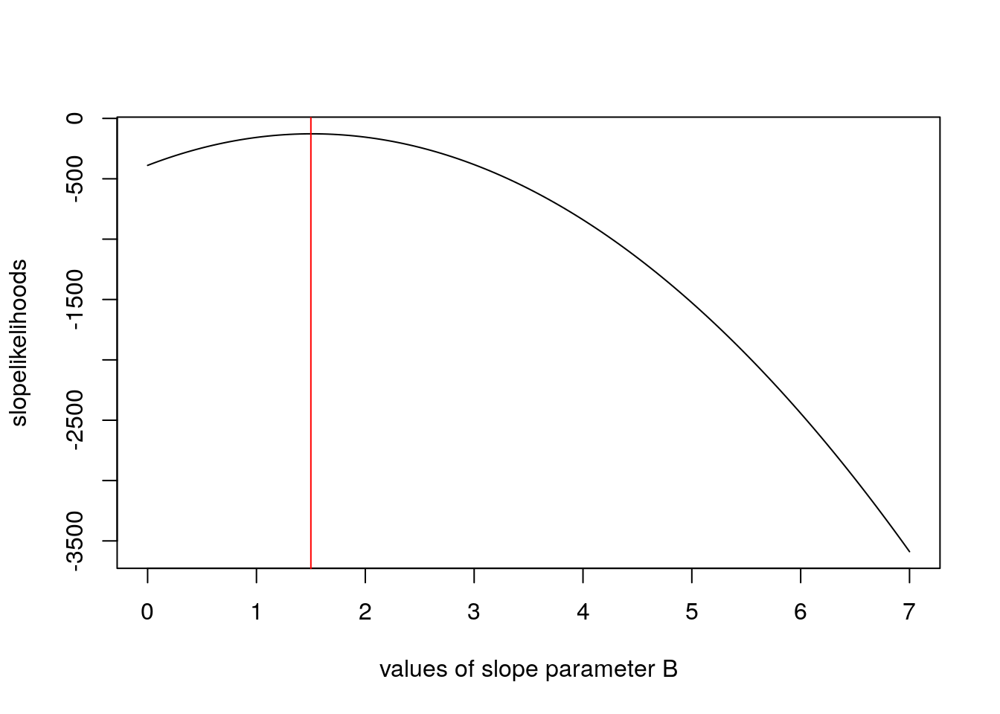

Note: Some of the commands below, particularly those accessing the terraref database from within RStudio, require being logged into the NDS Analytics Workbench. This requires signing up for the TERRA REF Alpha User program
options(warn=-1)
library(ggplot2)Stochastic Simulation (Bolker Ch5)
A deterministic linear function:
\[y_\rm{det}=a+bx\]
Add normally distributed errors, modeling \(\epsilon\sim(N(0,\sigma))\)
\[Y\sim N(a+bx, \sigma)\] Or equivalently:
\[Y\sim N(\mu, \sigma)\]
\[\mu = a+bx\] Lets first plot the deterministic function as a line
set.seed(10)
x <- 1:20
a <- 2
b <- 1
sd <- 2
y_det <- a + b * x
Y <- rnorm(length(x), mean = y_det, sd = sd)
plot(x, y_det, type = 'l')
points(x, Y)
lines(x, y_det+sd, lty = 2)
lines(x, y_det-sd, lty = 2)fit <- lm(Y~x)
y_hat <- predict(fit)
ggplot() +
geom_line(aes(x, y_det)) +
geom_point(aes(x, Y)) +
geom_line(aes(x, y_hat), linetype = 2)a_hat <- vector()
b_hat <- vector()
for(i in 1:100){
Y <- rnorm(length(x), mean = y_det, sd = 2)
a[i] <- lm(Y~x)$coefficients["(Intercept)"]
b[i] <- lm(Y~x)$coefficients["x"]
}
hist(a)mean(a)## [1] 2.158483sd(a)## [1] 0.9425405hist(b)mean(b)## [1] 0.987656sd(b)## [1] 0.07954147What if \(a\) and \(b\) have the following disrtibutions?
\[a\sim N(2,0.1) \\\textrm{and}\\ b\sim N(1,0.01)\\\]
x <- 1:200/20
A <- rnorm(100, 2, 0.1)
B <- rnorm(100, 1, 0.1)
error <- rnorm(100, 0, 2)
Y <- A + B * x + error
ggplot() +
geom_point(aes(x, Y))Metropolis hastings
Metropolis Hastings MCMC
A illustrative Bayesian approach: fitting a linear \(Y=a + bx\) model with MH-MCMC
Based on https://theoreticalecology.wordpress.com/2010/09/17/metropolis-hastings-mcmc-in-r/
Metropolis Hastings Algorithm
trueA <- 2
trueB <- 1.5
trueSD <- 5
sample_size <- 41
## predictor values
x <- -20:20
## prediction y
y <- trueA + trueB * x + rnorm(n = length(x), mean = 0, sd = trueSD)
plot(x, y)# param = [a, b, sd]
likelihood <- function(param){
a <- param[1]
b <- param[2]
sd <- param[3]
pred <- a + b*x
lls <- dnorm(y, mean = pred, sd = sd, log = TRUE)
sumlls <- sum(lls)
return(sumlls)
}
# sum(dnorm(a+bx-y, 0, sd = sd, log=TRUE))
slopevalues <- function(x){
return(likelihood(c(trueA, x, trueSD)))
}
slopelikelihoods <- lapply(seq(from = 0, to = 7, by = 0.05), slopevalues)
plot(seq(from = 0, to = 7, by = 0.05), slopelikelihoods, type = 'l', xlab = 'values of slope parameter B')
abline(v = 1.5, col = 'red')
specifying your priors
prior <- function(param){
a <- param[1]
b <- param[2]
sd <- param[3]
aprior <- dnorm(a, mean = 0, sd = 1000, log = TRUE)
bprior <- dgamma(b, shape = 1, rate = 0.25, log = TRUE)
# tau <- dgamma(1/sd, shape = 0.0001, rate = 0.00001)
# sdprior <- 1/tau
sdprior <- dunif(sd, min = 0, max = 1000, log = TRUE)
}
qgamma(c(0.025, 0.5, 0.975), shape = 1, rate = 0.25)## [1] 0.1012712 2.7725887 14.7555178qnorm(c(0.025, 0.5, 0.975), 0, 1000)## [1] -1959.964 0.000 1959.964qgamma(c(0.025, 0.5, 0.975), shape = 0.0001, rate = 0.00001)## [1] 0.000000e+00 0.000000e+00 6.244693e-106posterior <- function(param){
post <- likelihood(param) + prior(param)
}Metropolis Hastings MCMC Algorithm
- start somewhere reasonable
- compute L
- propose a new value for your params
- compute L
- jump to new params w/ P proportional to L(new/old)
- if you jump, keep the old params in your basket
proposalfunction <- function(param){
prop <- rnorm(3, mean = param, sd = c(0.1, 0.5, 0.3))
}
mhmcmc <- function(startvalue, iterations){
chain <- array(dim = c(iterations + 1, 3))
chain[1,] <- startvalue
for(i in 1:iterations){
proposal <- proposalfunction(chain[i, ])
probab <- exp(posterior(proposal) - posterior(chain[i, ]))
if(runif(1) < probab){
chain[i+1,] <- proposal
} else {
chain[i + 1, ] <- chain[i, ]
}
}
return(chain)
}
startvalue <- c(1, 2, 3)
chain <- mhmcmc(startvalue, 10000)
mean(duplicated(chain))## [1] 0.8320168burnin <- nrow(chain)/2
chain2 <- chain[burnin:nrow(chain), ]
#(1:nrow(chain2)/2)*2Simulation Models
Overview
A Photosynthesis model
Based on the coupled C4 photosynthesis - conductance model developed by Collatz and Ball Berry
G. Collatz, M. Ribas-Carbo, J. Berry. (1992). Coupled photosynthesis-stomatal conductance model for leaves of C4 plants. Australian Journal of Plant Physiology 519–538.
Basically conductance is coupled to photosynthesis, since plants need to regulate water loss as they uptake \(CO_2\):
\[g_s = m\frac{A_n h_s}{c_a}p + b\]
where \(g_s\) is stomatal conducatnce, \(A_n\) is net photosynthesis, \(h_s\) is relative humidity, \(c_a\) is \(CO_2\) at leaf surface.
and Photosynthesis is
\[A_n=min(A_c, A_L)-R_d\] Where Rubisco-limited rate is \(A_c\) and RuBP limited rate is \(A_L\)
\[A_c=V_m\left[\frac{c_i-\Gamma}{c_i+K_c(1+O_2/K_o)}\right]\]
\[A_L=?\] This is a non-linear equation with key plant physiological traits:
| Parameter | Description |
|---|---|
| vmax | maximum carboxylation of Rubisco according to the Collatz model. |
| alpha | alpha parameter according to the Collatz model. Initial slope of the response to Irradiance. |
| kparm | k parameter according to the Collatz model. Initial slope of the response to CO2. |
| theta | theta parameter according to the Collatz model. Curvature for light response. |
| beta | beta parameter according to the Collatz model. Curvature for response to CO2. |
| Rd | Rd parameter according to the Collatz model. Dark respiration. |
| b0 | intercept for the Ball-Berry stomatal conductance model. |
| b1 | slope for the Ball-Berry stomatal conductance model. |
The rate of photosynthesis is determined by environmental factors:
| Parameter | Description |
|---|---|
| Tl | temperature of the leaf (Celsius). |
| RH | relative humidity (as a fraction, i.e. 0-1). |
| Qp | quantum flux (direct light), (micro mol m-2 s-1). |
| Catm | Atmospheric CO2 in ppm (or micromol/mol). |
In the end:
\[[Gs, A, C_i]=f(T, RH, Light, CO_2, v_{max}, \alpha, k, \theta, R_d, b_0, b_1)\]
Let’s run this model!
First, retrieve some meteorological data:
metfile <- "/data/terraref/sites/ua-mac/raw_data/EnvironmentLogger/2017-05-31/2017-05-31_12-19-38_environmentlogger.json"
met <- jsonlite::fromJSON(metfile)
time <- lubridate::ymd_hms(met$environment_sensor_readings$timestamp)
par <- as.numeric(met$environment_sensor_readings$`sensor par`$value)
rh <- as.numeric(met$environment_sensor_readings$weather_station$relHumidity$value) / 100
temp <- as.numeric(met$environment_sensor_readings$weather_station$temperature$value)if(!require(BioCro)) devtools::install_github('ebimodeling/biocro')## Loading required package: BioCrolibrary(BioCro)A <- c4photo(Qp = par, Tl = temp, RH = rh)$Assim
pairs(data.frame(A, par, temp, rh))library(ggplot2)
ggplot()+
geom_line(aes(time, A))ggplot()+
geom_line(aes(time, rh))question: is f(mean(X)) = mean(f(X))?
testQp <- 11:20*100
testTl <- 21:30
testRH <- 21:30/50
A1 <- c4photo(Qp = mean(testQp),
Tl = mean(testTl),
RH = mean(testRH))
A2 <- lapply(c4photo(Qp = testQp, Tl = testTl, RH = testRH), mean)Why are these different?
For non-linear functions see Jensen’s Inequality (Wikipedia)
This means - be careful when and how you use averages - everywhere!!! Spatial and temporal downscaling is how crop modelers deal with lower resolution atmospheric model forecasts. For example the most recent IPCC 100 y climate forecasts were generated on ~100km grids (Taylor et al 2012), thus one data point may simultaneously represent a month that is \(60^o\)F and foggy in San Fransicsco and \(100^o\)F and dry in Davis, CA. At the same time, crop models need to run on local hourly data while also capturing the uncertainty represented by within and across model variability.
Model sensitivity
meanQp <- mean(par)
meanTl <- mean(temp)
meanRH <- mean(rh)
plot(1:100/100, c4photo(Qp = rep(meanQp, 100),
Tl = rep(meanTl, 100),
RH = 1:100/100)$Assim,
type = 'l', ylab = 'Assim', xlab = 'RH')plot(1:100/4, c4photo(Qp = rep(meanQp, 100),
Tl = 1:100/4,
RH = rep(meanRH, 100))$Assim,
type = 'l', ylab = 'Assim', xlab = 'RH')OK. What about the other parameters?
Lets set some priors on these:
set.seed(100)
n <- 1000
vmax <- rnorm(n, 45, 2)
Rd <- rnorm(n, 1, 0.10)
b1 <- rnorm(n, 4, 1)
x <- 1:100
hist(vmax, probability = TRUE)
lines(x, dnorm(x, 45, 5), type = 'l')x <- 1:200/100
hist(Rd, probability = TRUE)
lines(x, dnorm(x, 1, 0.10), type = 'l')### sample given time series of met
A <- matrix(nrow = length(time), ncol = 1000)
for(i in 1:1000){
A[,i] <- c4photo(Qp = par, Tl = temp, RH = rh, vmax = vmax[i], Rd = Rd[i], b1=b1[i])$Assim
}
median <- which.min(abs(quantile(colMeans(A), 0.75)-colMeans(A)))
ucl <- which.min(abs(quantile(colMeans(A), 0.95)-colMeans(A)))
lcl <- which.min(abs(quantile(colMeans(A), 0.25)-colMeans(A)))
ggplot() +
# geom_smooth(aes(time, A))+
geom_line(aes(time, A[,median])) +
geom_line(aes(time, y = A[,lcl]), linetype = 2) +
geom_line(aes(time, y = A[,ucl]), linetype = 2)### Use met as a variable, sample over variation within the hour
### sample over met variability
A2 <- Gs <- Ci <- Qp <- Tl <- RH <- vector(length = 1000)
for(i in 1:1000){
j <- sample(1:length(time), size = 1)
Qp[i] <- par[j]
Tl[i] <- temp[j]
RH[i] <- rh[j]
res <- c4photo(Qp = Qp, Tl = Tl, RH = RH, vmax = vmax[i], Rd = Rd[i], b1=b1[i])
A2[i] <- res$Assim
Gs[i] <- res$Gs
Ci[i] <- res$Ci
}
hist(A2)Equivalent of sensitivity analysis: (where A2, Gs, Ci are response variables)
pairs(data.frame(A2, Gs, Ci, vmax, Rd, b1, Qp, Tl, RH), pch = '.')The lm is pretty much a sensitivity analysis: what is the slope of the effect of inputs on the output of the model.
lm(A2 ~ vmax + Rd + b1 + Qp + Tl + RH)##
## Call:
## lm(formula = A2 ~ vmax + Rd + b1 + Qp + Tl + RH)
##
## Coefficients:
## (Intercept) vmax Rd b1 Qp
## 24.70262 0.41034 2.99286 12.98793 -0.01116
## Tl RH
## -0.67981 -95.92094The analysis of variance partitions the variance - how much if the total variance in A2 is contributed by each of the following parameters (recall that the domain for met variables is << the domain for physiological parameters …
What would happen if we used a whole year of meteorological data instead of the one hour of met data that we used?
aov(A2 ~ vmax + Rd + b1 + Qp + Tl + RH)## Call:
## aov(formula = A2 ~ vmax + Rd + b1 + Qp + Tl + RH)
##
## Terms:
## vmax Rd b1 Qp Tl
## Sum of Squares 87.13 701.90 183766.28 76.94 0.30
## Deg. of Freedom 1 1 1 1 1
## RH Residuals
## Sum of Squares 143.53 127108.81
## Deg. of Freedom 1 993
##
## Residual standard error: 11.31392
## Estimated effects may be unbalancedaov(Gs ~ vmax + Rd + b1 + Qp + Tl + RH)## Call:
## aov(formula = Gs ~ vmax + Rd + b1 + Qp + Tl + RH)
##
## Terms:
## vmax Rd b1 Qp Tl RH Residuals
## Sum of Squares 14290 55296 7649936 679 533 400 560296
## Deg. of Freedom 1 1 1 1 1 1 993
##
## Residual standard error: 23.75385
## Estimated effects may be unbalancedaov(Ci ~ vmax + Rd + b1 + Qp + Tl + RH)## Call:
## aov(formula = Ci ~ vmax + Rd + b1 + Qp + Tl + RH)
##
## Terms:
## vmax Rd b1 Qp Tl RH
## Sum of Squares 13012 139 2707255 2599 921 10051
## Deg. of Freedom 1 1 1 1 1 1
## Residuals
## Sum of Squares 11857425
## Deg. of Freedom 993
##
## Residual standard error: 109.2749
## Estimated effects may be unbalancedThis is how you might evaluate the model for a year (2005) of climate data from Champaign, Il.
data(weather05)
resA <- c4photo(Qp = weather05$solarR, Tl = weather05$DailyTemp.C -2, RH = weather05$RH)$Assim
pairs(data.frame(resA, Qp = weather05$solarR, Tl = weather05$DailyTemp.C -2, RH = weather05$RH))In this case the parameter values within a plausible range are overwhelmed by the met (photosynthesis requires light and enzymes basically stop by the time they reach 0\(\degree\)C). This illustrates what we know about how important environment is to organisms, including crops.
References
Taylor, K.E., R.J. Stouffer, G.A. Meehl: An Overview of CMIP5 and the experiment design.” Bull. Amer. Meteor. Soc., 93, 485-498, doi:10.1175/BAMS-D-11-00094.1, 2012. http://journals.ametsoc.org/doi/pdf/10.1175/BAMS-D-11-00094.1
Wang et al
Miguez et al